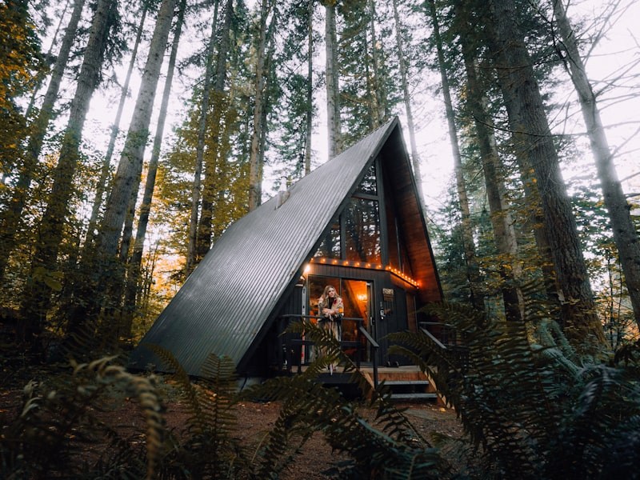
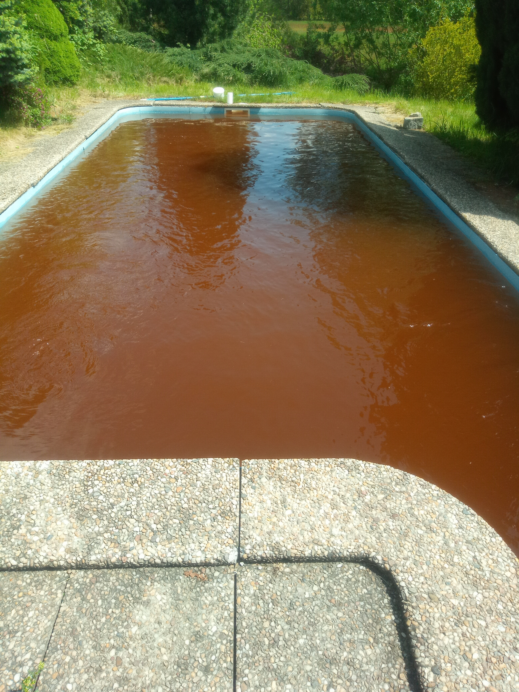

Naše služby
Kompletní péče o váš bazén od A do Z. Od pravidelného čištění po stavbu bazénu na klíč — v Jihočeském kraji a na Vysočině.

Čištění bazénů
Mechanické čištění bazénu při naplněném stavu vody s použitím značkové bazénové chemie CHEMOFORM. Odstraníme řasy a nečistoty ze dna i stěn, provedeme chlorování, úpravu pH a aplikujeme protiřasové přípravky. Pracujeme výhradně s bazény s pískovou filtrací. Doba servisu je 1–2 hodiny dle znečištění a velikosti bazénu. Doporučená frekvence: alespoň jednou týdně. Pravidlo pro filtraci: teplota vody / 3 = doba filtrace denně (6–12 hodin).
- Mechanické vysávání dna a stěn
- Chlorování a úprava pH (chemie CHEMOFORM)
- Aplikace protiřasových přípravků
- Kontrola a nastavení filtrace

Sezónní příprava / Odzimování
Kompletní příprava bazénu na letní sezónu. Namontujeme bazénové čerpadlo a čerpadlo protiproudu, vyčistíme a zkontrolujeme rozvody, nastavíme filtrační okruh, provedeme chlorování a úpravu pH. Používáme výhradně značkovou bazénovou chemii. Doba odzimování je cca 3–4 hodiny. Doplňkové služby: čištění zastřešení a terasy.
- Montáž čerpadla a protiproudu
- Čištění a kontrola rozvodů
- Nastavení filtrace, chlorování, úprava pH
- Aplikace algicidu (značková chemie)

Zazimování bazénu
Profesionální příprava bazénu na zimní období. Upravíme pH, přichlorujeme, snížíme hladinu vody pod úroveň skimmeru a trysek, vyčistíme filtrační jednotku a demontujeme filtrační i protiproudové čerpadlo. Vypustíme potrubí jako ochranu před mrazem a aplikujeme přípravek Chemoform ZAZIMOVAČ. Bazén je nutné na zimu zakrýt! Vhodná teplota vody pro zazimování: 15 °C.
- Úprava pH a přichlorování
- Snížení hladiny, vypuštění potrubí
- Demontáž čerpadla a filtrace
- Aplikace Chemoform ZAZIMOVAČ + zakrytí

All In — celosezónní balíček
Kompletní bezstarostná péče o bazén po celou sezónu. Balíček zahrnuje odzimování (sezónní přípravu), zazimování, pravidelné čištění maximálně jednou za 14 dnů, čistící přípravky, chlorové tablety i regulaci pH na celou sezónu. Mechanické vysátí nečistot každou návštěvou. V případě silného znečištění nebo kvetení řas přijedeme po telefonické domluvě. Servis dávkovacích zařízení, čerpadel a ohřevu dle ceníku.
- Odzimování + zazimování v ceně
- Pravidelné čištění max. 1× za 14 dnů
- Chemie na celou sezónu v ceně (chlor, pH)
- Okamžitá reakce při kvetení řas

Bazény na klíč
Kompletní realizace bazénu od návrhu po předání — včetně výkopových prací a technologie. Nabízíme špičkové plastové bazény vyráběné dle nejpřísnějších standardů a nově i fóliové bazény z těžké fólie AV FOLL (svařování fóliových bazénů). Dodáme bazén na přání i se zastřešením. Součástí je kompletní bazénové příslušenství: písková filtrace, filtrační čerpadla, solinátor ZODIAC, tepelná čerpadla RAPID a automatické dávkovací systémy chloru.
- Plastové bazény (PPL) — kvalita a dlouhá životnost
- Fóliové bazény (těžká fólie AV FOLL)
- Výkopové práce, montáž, kompletní technologie
- Filtrace, solinátor, tepelné čerpadlo, automatická chlorace

Zastřešení bazénů Alukov
Dodávka a montáž zastřešení od předního českého výrobce Alukov se zárukou až 15 let. Nabízíme 3 výrobní programy: zastřešení bazénů, teras i vířivek. Alukov je certifikován dle ISO 9001 a ISO 14001, splňuje normu NF P90-309 a vlastní řadu patentů. Prodloužíte koupací sezónu, ochráníte bazén před nečistotami a snížíte náklady na ohřev vody. Výrobní kapacita: 3 000 zastřešení ročně.
- Značka Alukov — záruka až 15 let
- Bazény, terasy i vířivky
- Certifikace ISO 9001, ISO 14001
- Posuvné a teleskopické systémy
Tepelná čerpadla RAPID
Dodávka a instalace tepelných čerpadel značky RAPID pro efektivní ohřev bazénové vody. Tepelné čerpadlo využívá energii ze vzduchu s vysokou účinností (COP), čímž výrazně snížíte náklady na ohřev bazénu oproti elektrickým průtokovým ohřívačům. Ideální kombinace s automatickým dávkovacím systémem pro kompletní bezobslužný provoz.
- Značka RAPID — ověřená kvalita
- Vysoká účinnost (COP) — úspora energie
- Kompletní dodávka a instalace
- Nízké provozní náklady oproti el. ohřevu

Automatická chlorace a solinátor
Dodávka a instalace automatických dávkovacích systémů chloru od značek ASEKO a VAGNER POOL. Automatická regulace pH i chloru zajistí stále čistou vodu bez denní ruční údržby. Nabízíme také solinátory ZODIAC pro bezchlorovou úpravu vody pomocí elektrolýzy soli — šetrnější k pokožce a příjemnější na koupání.
- Dávkovací automaty ASEKO a VAGNER POOL
- Solinátory ZODIAC (elektrolýza soli)
- Automatická regulace pH a chloru
- Výměna filtračního písku
Bazénová chemie CHEMOFORM
Prodej profesionální bazénové chemie značky CHEMOFORM za konkurenční ceny. V nabídce máme kompletní sortiment pro údržbu bazénové vody: tekutý chlornan sodný ve velkém balení, pH regulátory (pH+ a pH-), algicidy, vločkovače (flokulanty) a další přípravky. Bazénová chemie použitá při servisu se účtuje zvlášť.
- Chlornan sodný (velkobalení)
- pH regulátory (pH+ / pH-)
- Algicidy a vločkovače (flokulanty)
- Konkurenční ceny — značka CHEMOFORM

Vodní program Ekocis
Kompletní služby v oblasti vodního hospodářství od značky Ekocis. Nabízíme domovní čistírny odpadních vod (ČOV) certifikované dle ČSN EN 12566-3, retenční nádrže pro chytré hospodaření s dešťovou vodou (návratnost investice do 3 let), plastové jímky a septiky z polypropylenu odolné korozi, samonosné jímky NKL-EK i plastové vodoměrné šachty splňující ČSN normy. Zajistíme poradenství, dodávku i kompletní instalaci.
- Domovní čistírny odpadních vod (ČOV)
- Retenční nádrže — úspora přes 50 % nákladů na vodu
- Plastové jímky, septiky a samonosné nádrže
- Vodoměrné šachty — dodávka a instalace

Čistírny odpadních vod (ČOV)
Dodávka a instalace domovních čistíren odpadních vod Ekocis — certifikovaných dle ČSN EN 12566-3 Státním zkušebním ústavem v Brně. Kompaktní válcová nádrž (výška 1,5 m, průměr 1,3 m) je rozdělena na sektory pro biologické čištění. Součástí je kompresorový systém s vzdušnými ventily pro přesný chod. Vyčištěná voda je vhodná k odvodu do vsakovací jímky, vodoteče nebo k závlaze zahrady. Bezplatné uvedení do provozu po instalaci.
- Certifikace ČSN EN 12566-3 (SZÚ Brno)
- Tichý, bezpečný a spolehlivý provoz
- Bezplatné uvedení do provozu
- Odvoz kalu 1–2× ročně
Plastové jímky a septiky
Polypropylenové jímky a septiky odolné korozi pro skladování odpadních i dešťových vod, pitné a technické vody, sypkých materiálů i neagresivních chemikálií. Nádrže jsou konfigurovatelné dle vašich požadavků — vlastní rozměry, technické přepážky, přípojky potrubí, pevná i odnímatelná víka. Všechny jednotky jsou testovány na vodotěsnost a splňují hygienické normy MZd. Zajistíme výkopové práce i kompletní instalaci.
- Polypropylén — odolnost korozi
- Konfigurovatelné rozměry a tvary
- Splňují hygienické normy (MZd. č. 37/2001 Sb.)
- Výkopové práce a montáž v ceně

Plastové vodoměrné šachty
Polypropylenové vodoměrné šachty pro připojení vodovodní přípojky k hlavnímu řadu mimo budovu. Lehká konstrukce, snadná instalace, vodotěsné provedení. Vstupní otvor průměru 750 mm s pochozím plastovým poklopem. Nabízíme kruhové (průměr 1 000–1 300 mm) i obdélníkové (900 × 1 200 × 1 500 mm) provedení. Součástí jsou plastové stupadla, na přání i plastový žebřík. Dodáváme včetně instalace dle ČSN norem.
- Kruhové i obdélníkové provedení
- Pochozí plastový poklop (750 mm)
- Vodotěsné provedení dle ČSN
- Kompletní dodávka a instalace

Retenční nádrže
Systémy pro chytré hospodaření s dešťovou vodou s návratností investice do 3 let. Polypropylenové nádrže o objemu 1–25 m³ s automatickým čerpadlem a záložním napojením na vodovod. Dešťová voda je ideální pro závlahu, praní i splachování — šetří přes 50 % nákladů na vodu. Nabízíme zahradní (NDA), domovní (NDV) i tlakové (NDP) systémy s životností přes 20 let.
- Úspora přes 50 % nákladů na vodu
- Návratnost investice do 3 let
- Objem 1–25 m³, automatický provoz
- Životnost přes 20 let, bezúdržbový provoz

Doplňkové služby
Kromě hlavních služeb nabízíme i řadu doplňkových prací kolem bazénu. Sekání trávy (cca 1 000 m²/hod), čištění zastřešení bazénu, čištění terasy, výměna filtračního písku, odstranění vodního kamene z vypuštěného bazénu a další údržbové práce dle domluvy. Víkendový servis s příplatkem 800 Kč.
- Sekání trávy (550 Kč/hod)
- Čištění zastřešení a terasy
- Výměna filtračního písku (od 600 Kč + materiál)
- Odstranění vodního kamene (4 000 – 10 000 Kč)